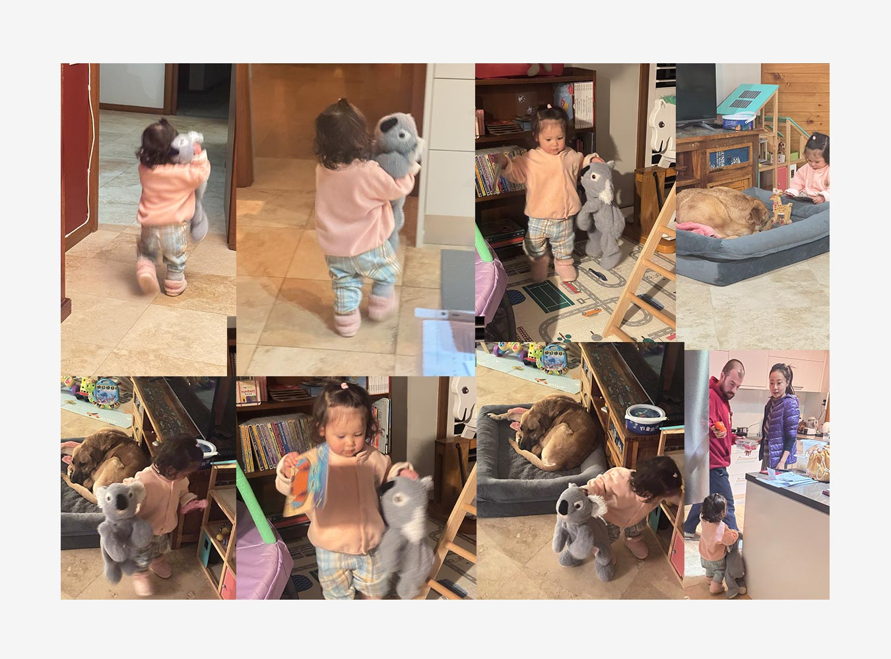
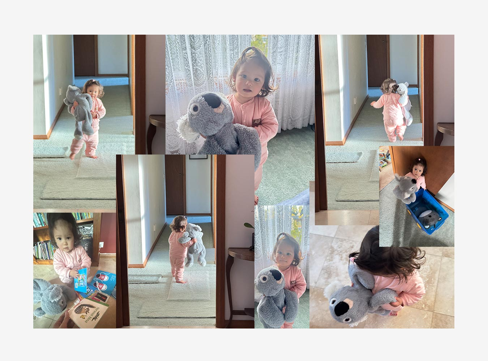
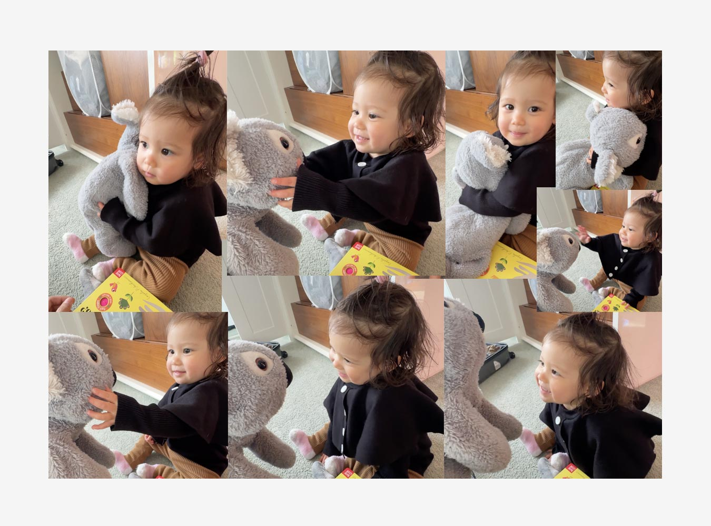

The first time I met Raya was last 2024 of May. She was just around 6-months-old at the time. She could barely walk, play around, or do anything but cry. I remember playing with Raya in a german family back then and all she can do is be mesmerised by some maracas, and try to chew on whatever item she can find.
I never actually realized how fast babies grow. Right now, Raya’s very playful. She can play independently, walk around, and mumble a few words. She knows a couple of usual words like “mama” and “papa” of course, some Chinese words, and she knows now how to say “no.”
But there’s one word she knows how to say which makes me so happy and excited - “kala.” Yes, she knows how to say “koala.”
Take note: I DO NOT want children (at least right now.) I also do not see myself having kids (at least right now.) I know that I need the right woman first. But I’m not actively looking for someone. Let alone even attempt to look for that specific type of person. I’m fine with living my life not having children (but would be nice though, I guess.) But, I’m perfectly okay with not having kids. I’m also perfectly okay with having a partner and still not wanting to have kids.
I thought about this a lot so much that I’m able to put a criteria on when I feel like I’ll want to have a kid: my biggest dream right now is to travel the world and visit my top 3 places to visit (Italy, London, and Japan). I’ll know I’m at the stage when I’ll possibly want to have a kid when I think of this: “Ugh I don’t find going to Italy that exciting anymore.” Because by then, what’s the point of life anymore?
Anyway, I bought two soft toys and this one travel pillow with me. One is some sort of long bear which my mom bought for me right before my first flight to Australia. Second is a soft koala toy which is sort of similar to Teddy - Mr. Bean’s soft toy. The last one is a travel pillow which is koala themed.
My room is located just beside the main door. So people frequently walk past it. I put my koala soft toys and pillow on the bed like an alter - visible to whoever passes-by the door.
Raya frequently passes and sees the koala toys. One day, I was away. Sukey and Raya was playing just right outside the door (because Raya also has some toys around there) and kept on pointing on my koala toys screaming “kala!!!” Sukey kept on saying, “No Raya, that’s Uncle Gino’s” and Raya can’t play with the koalas.
I got back home and they were at the front of my room. Sukey told me about that and I immediately gave Raya one of my koala soft toys (this one is named “Koko” from the Filipino Breakfast Ceral “Koko Krunch.”)

AND IT WAS SO CUTE AS FUCK? She immediately grabbed and hugged the Koko so hard. She ran around the house with it. Bought it to her play places. She does this thing where she pretends to. be tucking someone to bed and put a blanket on top of them. She kept on doing it with Koko. She also likes to put Koko and my koala travel pillow on this some sort of plastic wagon and tour them around the house.
Everytime I give her Koko, her eyes literally sparkle at it and scream “kala!!” I swear to god, if I were to have kids and they are not able to say the world “Koala,” what is the point of having kids anymore?

Anyway, I kept playing with Raya from there. I don’t see myself to be really good with kids - especially babies. I just think that they have a mind of its own and how do I manage that? But I feel very comfortable playing with Raya.
On the day they are about to leave China, Raya’s parents were busy checking out their things and packing luggages. I was constantly left with Raya. We continued to play with Koko and the travel pillow. Her reaction remains the same. She would hug it so tight and look at it with such happiness. I really wanted to give it to her, but I’m sorry Raya - I can’t.

Anyway, I love you, Raya. I hope and try my best to stay here for longer. I hope I can see you grow up and be a godfather to you in the future. Your parents are amazing and full of love, I’m sure you’ll grow up to become an amazing person one day.